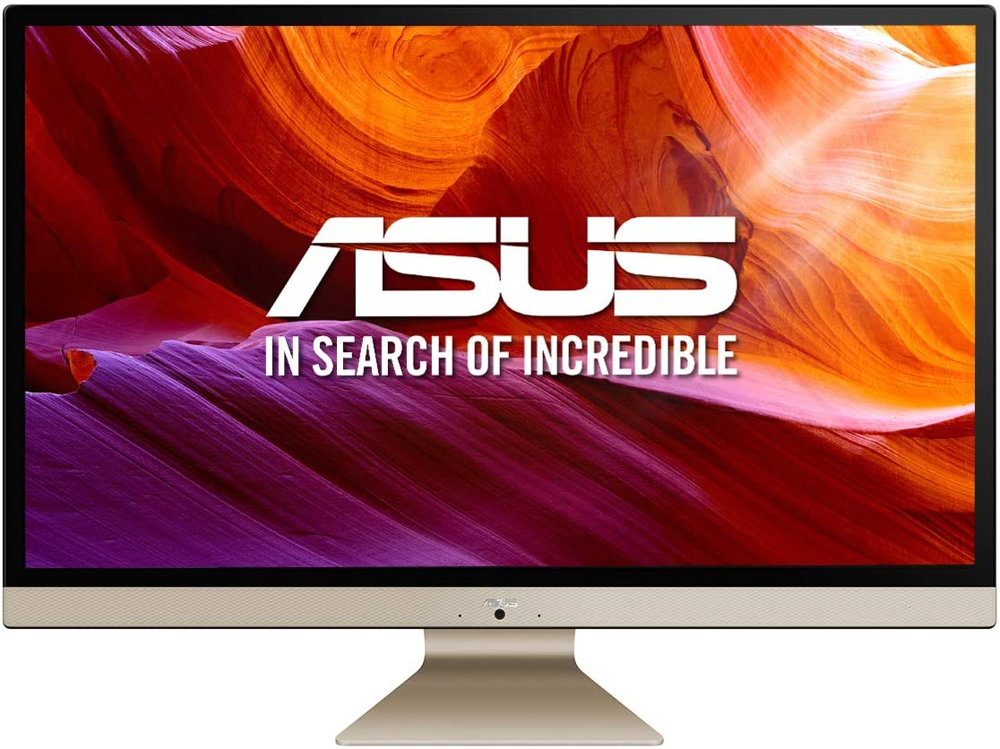

Si lo que buscas es la mejor computadora de escritorio para usuarios de Windows y Linux, has llegado al lugar indicado, pues el ASUS Vivo AiO V272UAK-BA052D es exactamente lo que buscas. Sigue leyendo para averiguar por qué consideramos tan bueno este computador de la reconocida marca ASUS.
RAM: 16GB
Disco: 256GB SSD + 1TB HDD
Procesador: Intel Core i5-8265U
Procesador gráfico: Intel® UHD Graphics 620
Resolución: Full HD
Marca: ASUS
Sistema operativo: sin sistema operativo
Precio imbatible: A pesar de la existencia de computadoras de escritorio más baratas, ninguna cuenta con la gran cantidad de recursos y la inmejorable relación calidad-precio de esta innovadora computadora de mesa.
Veloz y hábil: Su procesador Intel i5, ofrece elevada potencia. Mucho más que suficiente para realizar todos los procesos que necesites en tu computadora de mesa sin tiempos de espera ni bloqueos.
Buenos gráficos a precio razonable: Su tarjeta gráfica integrada Intel UHD Graphics 620, pese a no ser de las más potentes, es la ideal para todos los procesos cotidianos, dado que puede ofrecer altas resoluciones. Además, avarata infinitamente el costo frente a otras gráficas.
Alta resolución: Sus dimensiones de 1920 x 1080 píxels la dotan de la cualificación de Full HD (FHD) provocando que sientas las imágenes como si estubieras dentro de ellas.
Gran espacio en disco: Sus 1256GB de espacio en disco aportan la capacidad de almacenar todos esos archivos que generan el trabajo diario, el lecer e incluso los momentos de inspiración en que se sacan tantas fotos.
Alta velocidad de disco: Al tener que uno de los discos es un Solid State Disk (SSD), la velocidad de transmisión de archivos es muy elevada, evitando esperas al conectar unidades externas o al Guardar archivos como Words, Vídeos o Fotos tras editarlos.
Evitar desbordamientos: Sus 16GB de RAM son más que suficientes para evitar desbordamientos de memoria en actividades incluso tan pesadas como la edición de vídeo o el uso de Inteligencia Artificial.
Por todo lo que hemos visto, es un ordenador casi perfecto, pero quiero que la reseña sea totalmente realista. Al tener no tener sistema operativo (y por tanto tener que instalárselo tú), por un lado reduce considerablemente el precio, pero por otro, puede dar pereza su instalación. Para solucionar ese problema, en este vídeo verás como tenerlo totalmente funcional en unos minutos.
Su almacenamiento, su potencia, sus novedades y sus gráficos hacen del ASUS Vivo AiO V272UAK-BA052D una opción casi perfecta. Además, su precio bajo para un computador de escritorio de sus cualidades hacen de este modelo de sobremesa, una opción económica e ideal para tu negocio.
Todo aquel que lo ha usado tiene una opinión muy clara: Recomienda el ASUS Vivo AiO V272UAK-BA052D como el mejor ordenador de mesa para particulares de este 2022
Si estás buscando un computador de escritorio para las ti o para un amigo, ASUS Vivo AiO V272UAK-BA052D es tu mejor opción.